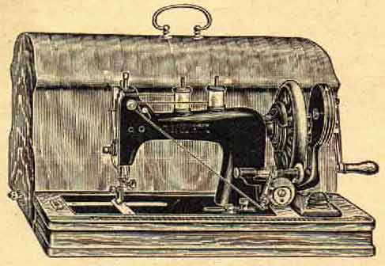
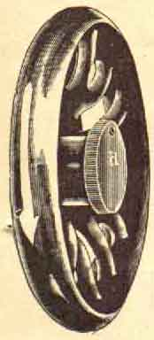
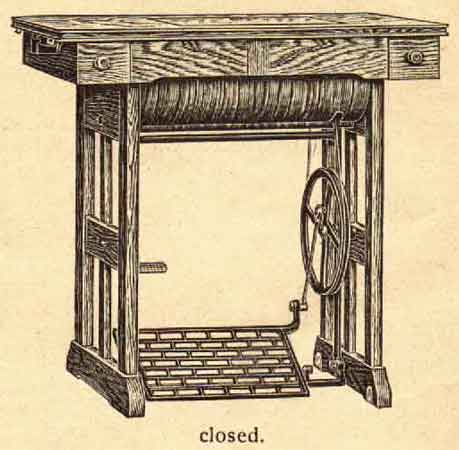
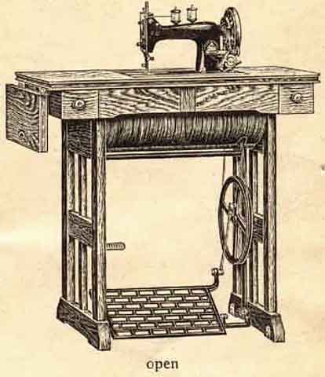

If the machine works badly, drops stitches or if the cotton breaks, one should examine:
Whether the needle is in its right place and whether it is blunt or bent.
Whether the needle is of the right thickness in proportion to the cotton.
Whether the cotton is even, and is properly threaded.
Whether the tension is right, not too tight and whether the needle-palte is damaged by the needle, as otherwise the cotton is easily broken when passing the rough edges of the needle-plate.
If in spite of the observance of the above instructions the machine will not work properly, you should apply to the shop where the machine was purchased, but under no circumstances get strangers to interfere with it, as they often spoil the machine either wilfully or from ignorance.
The
is supplied with the following attachments:
(1401) 1 Common Foot, attached to the machine
(1407) 1 Edge Sewing Foot
(1408 & 1409) 1 Quilting Guide with Screw-clamp
(1410) 1 Adjustable Hemmer
(1411) 1 Thumb-screw for securing attachments
(1412) 1 Guide
(1413) 1 Large Screw-driver
(1414) 1 Shuttle Screw-driver
(1415) 1 Oil-can
(705) 6 Needles, 1 of which in the Machine
(1747) 4 Bobbins, 2 of which in the Machine
(1786) 1 Thread-lever Spring
1 Instruction Book
******************
Sewing Machines with multiplying geared Hand-attachment

are exactly the same as those described in this instruction book, only they have a double hand-wheel.
When the machine is to be used, turn the lever of the hand-appliance into its place and connect the crank with the hand-wheel, which will set the machine in motion. The hand-appliance should always be carefully oiled.
To disconnect the machine hold the wheel with your left hand, turn the disconnecting disc "a", as shown in the illustration, towards you with your right hand.
To reconnect the machine turn this disc in the opposite direction. The hand-wheel should always turn towards you.
The ratchet bobbin-winder is put in motion by a rubber-ring.
Besides the parts mentioned on page 17 the following extra parts will be attached to this machine:
(1402) 1 Narrow Hemmer
(1403) Broad Hemmer
(1404) 1 Seam-feller
which are already described exactly on page 15 - 17, furthermore (1705 1 Throat-plate
and (705) 5 Needles
******************************
Model JUNIOR
Drophead Cabinet Machine with wooden Sides fitted with Cylinder Shuttle


********************